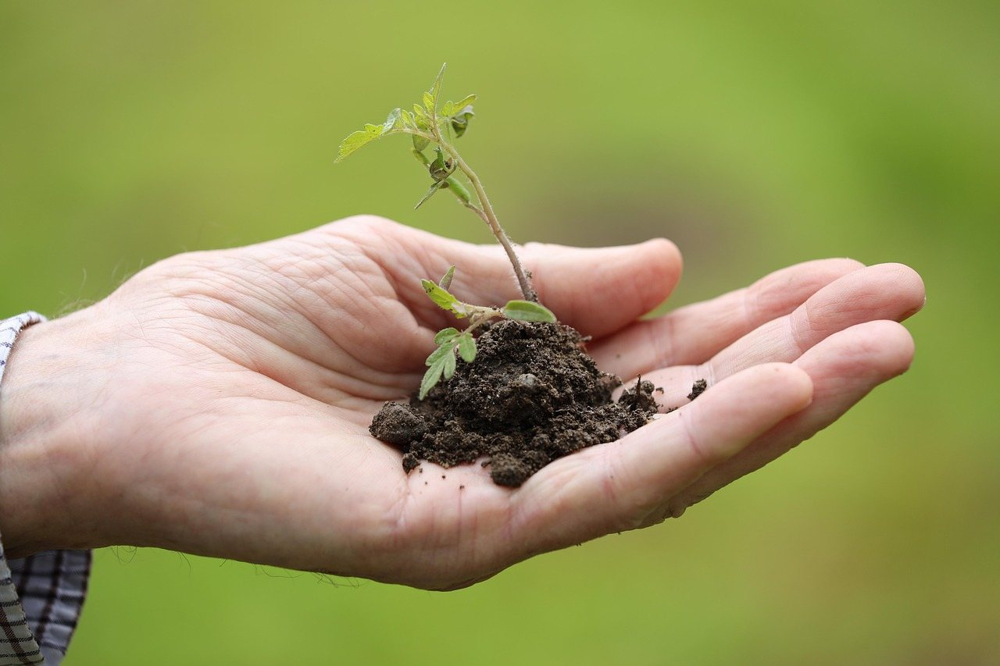

About · Brunswick, ME
A yard that looks like it belongs there.
We work with the land around your home, not against it, so the finished look feels natural. Lawn, beds, shrubs and the edges between them.
Some yards need a fresh start. Others just need someone to keep at it. Either way, the aim is the same: a yard that feels cared for and is easy to enjoy.

What we believe about yards
Three habits that show up in every yard we touch
Natural finish
Shaped by the land
Beds follow the lay of the ground. Plants go where they'll do well, not just where they look tidy on day one. The goal is a yard that looks like it grew in nicely.
All year
Looked at more than once
Cleanup in spring, mowing and edging through summer, leaves in fall. A yard does better when someone keeps an eye on it between the big jobs.
Plain dealing
No jargon, no fuss
You tell us what the yard needs. We say what we'd do about it, in words you'd use yourself, and then we do the work.
Mulch goes down once, and goes down right.
Your beds will thank you by July
What to expect
Three steps, no mystery
-
You tell us about the yard
Say what's bugging you, or what you'd like it to be. A few sentences through the request form is plenty.
-
We look at it
We see the yard for ourselves: the slope, the sun, what's growing well and what isn't.
-
We do the work and keep it up
Cleanup, planting, mulch, mowing, trimming and edging. Do it once, or keep it going season after season.
Tell us about your yard.
A few lines about what you've got is a good place to start.
Ask for a yard visit